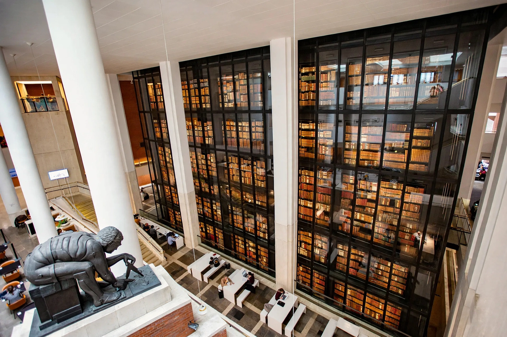

The British Library is the national library of the United Kingdom and is one of the largest libraries in the world. Its collection is estimated to contain between 170 and 200 million items from many countries. As a legal deposit library, it receives copies of all books produced in the United Kingdom and Ireland, including a significant proportion of overseas titles distributed in the UK. The library is a non-departmental public body sponsored by the Department for Culture, Media and Sport.
| British Library | |
|---|---|
 | |
| Established | 1973 |
| Location | St Pancras, London; Boston Spa, Yorkshire |
| Collection size | 170–200 million items |
| Chief Executive | Roly Keating (2012–2024 era) |
The British Library was created by the British Library Act 1972, separating the library departments of the British Museum, and began operating on 1 July 1973. Its purpose-built building at St Pancras, designed by Colin St John Wilson and M. J. Long, was officially opened by Queen Elizabeth II in 1998 and is a Grade I listed building — one of the youngest buildings to receive that status.
Treasures include two copies of the Gutenberg Bible, the sole surviving manuscript of Beowulf, the Lindisfarne Gospels, Leonardo da Vinci's notebooks, the Magna Carta (two of the four surviving 1215 copies), Shakespeare's First Folio, Handel's Messiah autograph, Beatles lyrics, and the Diamond Sutra, the world's earliest dated printed book (868 CE). The library holds some 14 million books, over 400,000 journal titles, the UK Sound Archive, and a vast collection of patents and stamps.
The library adds some three million items every year occupying 9.6 kilometres (6 mi) of new shelf space. Reading rooms at St Pancras serve researchers, and the Boston Spa site in Yorkshire houses the Document Supply Service and much newspaper storage. The library's digital collections and the UK Web Archive preserve British websites.
In October 2023 the library suffered a major ransomware attack by the Rhysida group, which exfiltrated and leaked data and took most online services offline for months, becoming a widely cited case study in cyber-resilience for cultural institutions.
From Wikipedia, the free encyclopedia (recreated from memory).